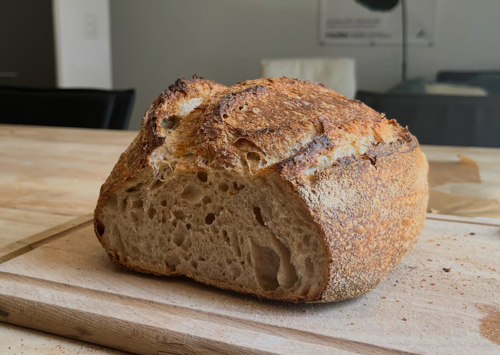
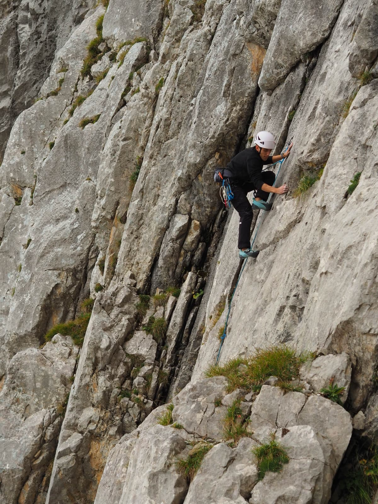

Other information

When I am not doing mathematics, I enjoy cooking and coding, and have a few side projects I like to slowly work on from time to time. Baking is among my interests too, and lately I have been making my own sourdough bread. I also like photography and usually take my camera with me whenever I go on a trip.

I like to spend the rest of my time outdoors. I started running a long time ago, and it has stuck with me since then more than any other sport. Recently I have taken up climbing and cycling too, and during the winter I take any chance I can to go skiing.